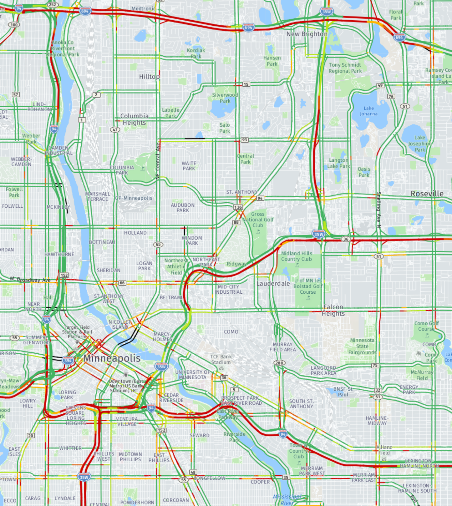

TH 280 Corridor Closure and Local Access Strategy
SP 6242-83
Used a Cube-based diversion review to test full closure impacts, State Fair travel patterns, and bridge-access decisions around TH 280 and I-94.
- Challenge: assess a long-term TH 280 closure while Broadway, Franklin Ave Bridge, University Ave, and Territorial Rd were affected.
- Approach: modeled freeway diversion, local street increases, State Fair travel patterns, and bridge closure effects to test access options.
- Value: supported recommendations to keep key bridges and Eustis St access in service while preparing for higher volumes on Snelling, Vandalia, and nearby local streets.